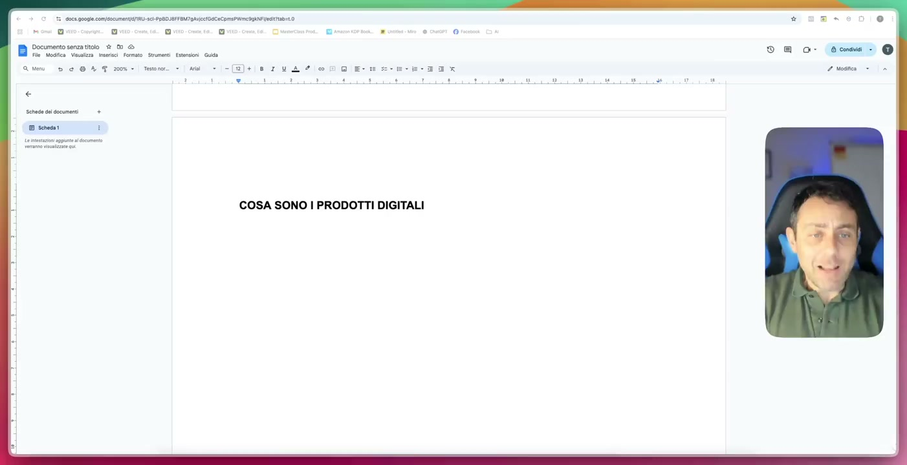
OCR: 33 dock google comjsocamenii 3%: PNODIOFFONTANZIOSC ACACIA mori o a o Documento senza titolo dt © © DESAT Io @ eno tuono > | ani > |-(a)+la ra è DI scien i COSA SONO | PRODOTTI DIGITALI
L'altro argomento estremamente interessante è che cosa sono i prodotti digitali. Fino ad ora abbiamo parlato di business, abbiamo parlato di attività imprenditoriale online, abbiamo visto che nell'istante in cui c'è un mercato di riferimento e domanda e offerta si incontrano, possiamo fare tantissimi soldi vendendo prodotti o servizi, ma all'interno della categoria dei prodotti tendenzialmente abbiamo due tipologie di prodotti principali. Quindi tralasciamo per ora i servizi che sono una categoria a sé stante e sono tendenzialmente delle attività che vengono svolte solitamente da liberi professionisti, da coach, formatori, periti, eccetera. Quindi tralasciamo questa parte che non ci interessa, parliamo della parte di prodotti. Quando parliamo di prodotti in realtà parliamo di due categorie distinte di prodotti. Parliamo di prodotti fisici, quindi prodotti tendenzialmente tangibili, prodotti che si possono toccare, che possiamo
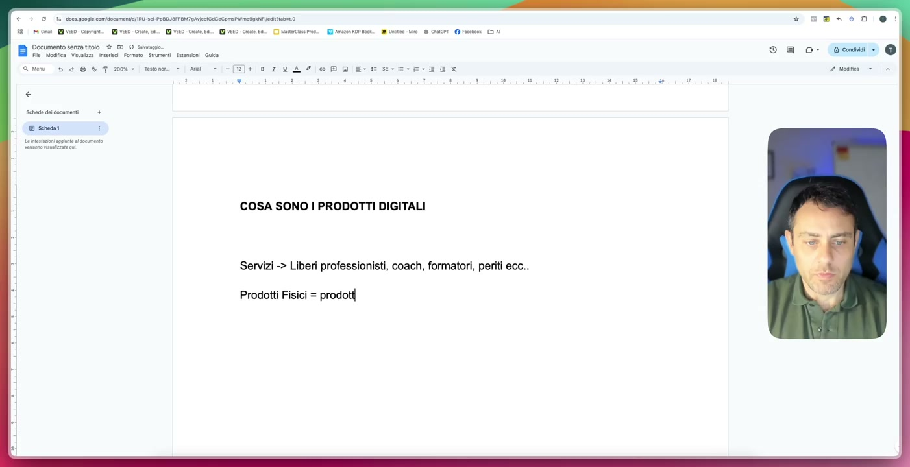
OCR: € > Gt docegcoge cnisccumeniaRU4-PPODIEFFOUTANCIGOCACpmePimeOZI at E Moni @r-c GI vito crt EI VEC QI VEED cf Ci Documento senza titolo st tO 0 saba Que» e GA 9 200- | Toson = | ar > (+e e DI creta COSA SONO | PRODOTTI DIGITALI Servizi -> Liberi professionisti, coach, formatori, periti ecc.. Prodotti Fisici = prodott| 2 iii >
materialmente utilizzare durante la nostra attività quotidiana e poi parliamo di prodotti digitali. Noi ci concentreremo all'interno di questo corso principalmente sulla categoria di prodotti digitali che sono prodotti non tangibili, cioè prodotti che non si possono toccare, come li definisco io quindi andiamo a vendere dei bit digitali. Perché noi ci focalizziamo sui prodotti digitali? Perché tendenzialmente hanno un insieme di vantaggi che prodotti fisici non hanno. Vediamo quali sono i vantaggi. In primis ovviamente il fatto che possiamo realizzarli a posto zero. Quando noi vendiamo prodotti fisici in realtà noi acquistiamo il prodotto o realizziamo il prodotto se fate drop shipping, tendenzialmente lo acquistate dopo ma tant'è avete la spesa del prodotto da sostenere e poi andiamo a inviare il prodotto al cliente che ce
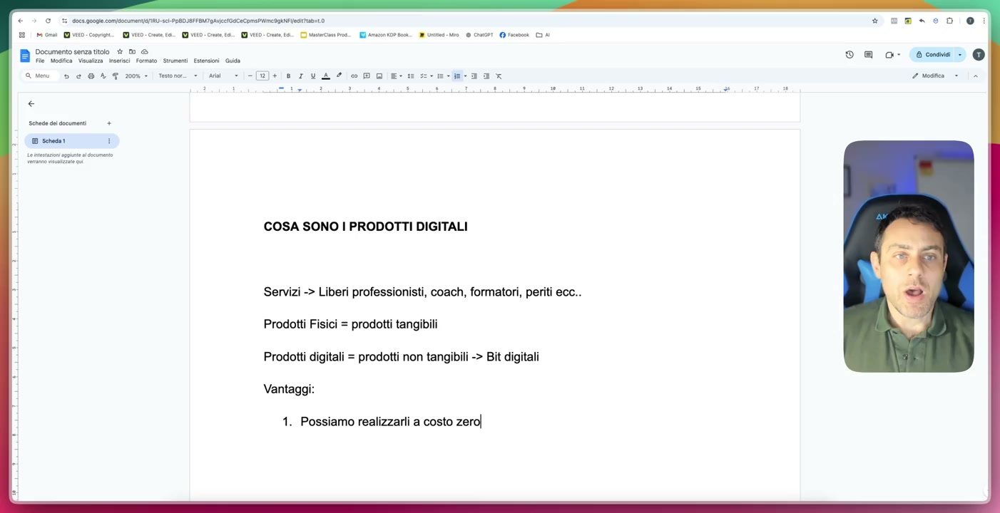
OCR: € > GE cs gs convccImendIIRs-POO0IOFFOUTIAI CCA 3 Mona Mc uo GI vito.cme to. itso-cnm te DI rt E AmamonDP don. inse © CONT. i Documento senza titolo #1 © © @ ue 5 e GA 2004- | fesonor > | Aid > -(@]+ A FUA ZOO è DI seta i COSA SONO | PRODOTTI DIGITALI Servizi -> Liberi professionisti, coach, formatori, periti ecc. Prodotti Fisici = prodotti tangibili Prodotti digitali = prodotti non tangibili -> Bit digitali Vantaggi: 1. Possiamo realizzarli a costo zero]
l'ha commissionato. Quindi il grosso problema, così si può dire, ma diciamo il grosso svantaggio dei prodotti fisici rispetto ai prodotti digitali risiede nel fatto che i prodotti fisici hanno un costo intrinseco che ad oggi i prodotti digitali non hanno. Perché dico ad oggi ragazzi? Perché mentre un tempo per realizzare un prodotto digitale potevamo affidarci a dei freelancer professionisti che realizzassero il prodotto digitale al posto nostro, cosa che ancora oggi possiamo fare e che comunque si fa nell'istante in cui vogliamo realizzare un prodotto che non è il classico ebook videocorso, quant'altro lo vedremo nel corso appunto di questo corso, scusate il gioco di parole, ma se vogliamo realizzare ad esempio un SaaS, quindi un software as a service, vogliamo utilizzare un'applicazione abbastanza complessa, quello che facciamo di solito è rivolgerci a dei freelancer qualificati che realizzano il prodotto per noi. Ad oggi l'intelligenza artificiale può realizzare prodotti di questo tipo ma non può realizzare prodotti così complessi, almeno all'atto della registrazione di questo video. Poi sempre ragazzi, fra tre anni
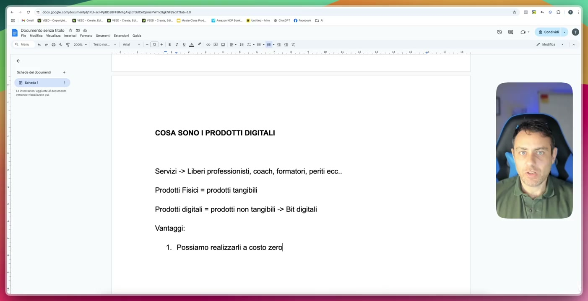
OCR: doc 0g cOMAMENHRL-PPODLEFFOMPOANEEICSCA COMM IAMN E O VD. coon. QD VIED- cine E VO. QI vicine fo. DI Mireicim GOT @ ite A Documento senza titolo #1 © Que 5 e GA 2004- | fesonoe > | Atl > -(A]+ e FU A ZIO e DI scredai i COSA SONO | PRODOTTI DIGITALI Servizi -> Liberi professionisti, coach, formatori, periti ecc.. Prodotti Fisici = prodotti tangibili Prodotti digitali = prodotti non tangibili -> Bit digitali Vantaggi: 1. Possiamo realizzarli a costo zero]
l'intelligenza artificiale così come pare che sia, visto che ho letto che nelle ultime notizie addirittura c'è Meta che vuole licenziare gran parte degli ingegneri junior per focalizzare appunto le sue attenzioni sull'intelligenza artificiale, ma ad oggi, ripeto, la situazione è questa. I prodotti digitali un po' più complessi non possono essere realizzati all'intelligenza artificiale. Poco male perché i prodotti digitali semplici sono quelli che vendono e vendono tantissimo, lo vedremo nel corso di questa di questa lezione, di questa big lesson, di questa lezione grandissima, di questo corso completo sui prodotti digitali, ma tant'è. Quindi se vogliamo realizzare prodotti più complessi, cosa che vi sconsiglio visto che inizialmente tendenzialmente andremo a vendere dei prodotti digitali semplici e potremo fare davvero una svagonata di soldi attraverso questi prodotti digitali, e poi nell'istante in cui decidete di realizzare qualcosa di più complesso, di testare qualcosa di più complesso, visto che come dico io il test è la madre di ogni verità, potete
tranquillamente realizzare il vostro prodotto digitale, il vostro software, la vostra app delegandone appunto la creazione un freelancer professionista. Ma ad oggi possiamo realizzare prodotti digitali a costo zero. Come li realizziamo a costo zero? Sfruttando l'intelligenza artificiale. Vedremo sempre come fare in questo corso. Quindi questo è il primo grosso vantaggio. Ragazzi, perché questo è il primo grosso vantaggio? Perché se noi ad esempio dobbiamo vendere, vi faccio subito un esempio per farvi capire, un prodotto fisico che supponiamo ha un costo prodotto di 10 euro, ok? E lo vogliamo rivendere a 49, va bene? Allora in questo caso voi direte abbiamo un margine di 39 euro, la realtà è ben diversa. Perché è ben diversa? Perché noi abbiamo, quando vendiamo il prodotto fisico, il costo del prodotto è di 10 euro, ok? Se vendiamo la spesa prodotto,
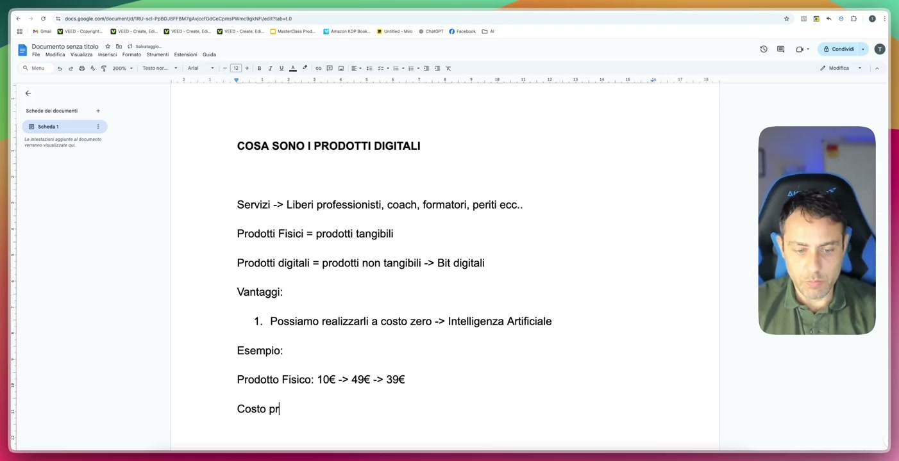
OCR: 966 0g COEN L-PPODLAFFOMPOANEICSCE CM PMI ED Documento senza titolo st 10 0 seg Que e AT 20 7a DI seta i vivono. DI tre rid Hl+ e VA OMO Es COSA SONO | PRODOTTI DIGITALI Servizi -> Liberi professionisti, coach, formatori, periti ecc.. Prodotti Fisici = prodotti tangibili Prodotti digitali = prodotti non tangibili -> Bit digitali Vantaggi: 1. Possiamo realizzarli a costo zero -> Intelligenza Artificiale Esempio: Prodotto Fisico: 10€ -> 49€ -> 39€ Costo pr]
mettiamola così, spesa prodotto. Se invece il prezzo al quale apprezziamo il nostro prodotto al pubblico è di 49 euro, solitamente IVA inclusa, quando poi andiamo a calcolare i margini dobbiamo levar l'IVA. Quindi abbiamo un 49 diviso 1.22, Se stiamo in Italia, i margini del prodotto sono pari a 40 euro, quindi eliminando IVA, meno i 10 euro del costo prodotto, meno il costo delle azze. E se noi generiamo una conversione con 20 euro, ecco che qui i costi si assottigliano e abbiamo 10 euro di margine, ok? Cioè noi per ogni prodotto fisico che vendiamo a 49 euro, marginiamo 10 euro sempre, ragazzi,
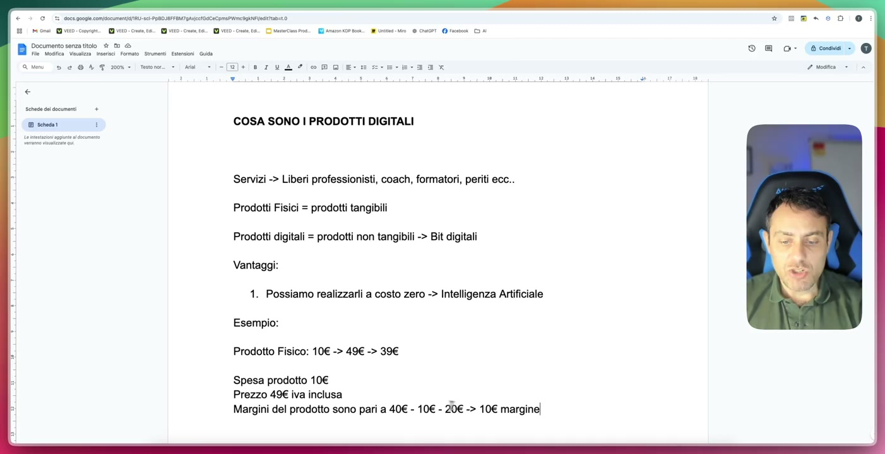
OCR: docs og cOn PPADEFFOM7AANESCECE CM PMI Documento senza titolo © © Que de BAT 2008 >| Toson > (Ar È COSA SONO | PRODOTTI DIGITALI Servizi -> Liberi professionisti, coach, formatori, periti ecc.. Prodotti Fisici = prodotti tangibili Prodotti digitali = prodotti non tangil Vantaggi: 1. Possiamo realizzarli a costo zero -> Intelligenza Artificiale Esempio: Prodotto Fisico: 10€ -> 49€ -> 39€ Spesa prodotto 10€ Prezzo 49€ iva inclusa _ Margini del prodotto sono pari a 40€ - 10€ - 20€ -> 10€ margine]
nell'istante in cui il costo delle azze, cioè il costo delle nostre campagne pubblicitarie, resta stabile sui 20 euro, cosa fattibile. Vedremo nel corso appunto di queste lezioni, queste grandi lezioni, questo corso aggregato. Ragazzi chiamatelo come volete voi, visto che appunto la mia intenzione all'atto della registrazione di questo video è di registrare un unico video gigantesco che sia un corso completo sui prodotti digitali per permettervi di partire, visto che in tantissimi avete chiesto un corso gratuito per partire con i prodotti digitali, eccovi accontentati. Come vi stavo dicendo, qui abbiamo un margine del prodotto che è di 10 euro, questo nell'istante in cui riusciamo a mantenere le nostre campagne pubblicitarie sui 20 euro per conversione. Se invece noi parliamo di prodotto digitale, la spesa prodotto è pari a 0 euro, perché ovviamente non spendiamo nulla, deleghiamo la realizzazione del prodotto all'intelligenza artificiale. Poi se il prezzo è di 49 euro e vendiamo
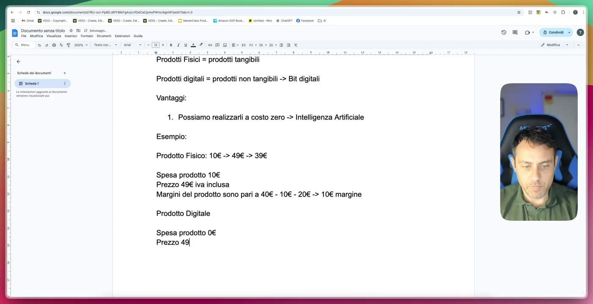
OCR: dsc 0g COEN PPODLEFFOMPIANEICSCE CM MONA O um ed 0 vio. Quo GO vit: cime to. EI VEC ta. Cna E mn Documento senza titolo st tO 0 sata ‘e Que 5 e 6A 200 - | fesono > | Al > |-(E]+ e FU A ZIONE 2 vata > Tn e Prodotti Fisici = prodotti tangibili ARL 7 Prodotti digitali = prodotti non tangibili -> Bit digitali Vantaggi: 1. Possiamo realizzarli a costo zero -> Intelligenza Artificiale Esempio: Prodotto Fisico: 10€ -> 49€ -> 39€ Spesa prodotto 10€ Prezzo 49€ iva inclusa Margini del prodotto sono pari a 40€ - 10€ - 20€ -> 10€ margine Prodotto Digitale Spesa prodotto 0€ Prezzo 49
ad esempio un ebook, noi possiamo richiedere un isbn e pagare IVA al 4%, ok? Questa è una chicca ragazzi che non vi da nessuno, è capito io. Quindi se paghiamo l'IVA al 4%, i margini del prodotto, questo era un prodotto fisico, questo è un prodotto digitale, sono pari a il costo del prodotto, cioè il prezzo del prodotto che è 49 euro, eliminando l'IVA viene 47 euro, 47,11 mettiamo 47 ragazzi, stiamo capiti, meno le spese per la realizzazione del prodotto, per l'acquisto del prodotto sono 0 euro, visto che noi deleghiamo la creazione del prodotto all'intelligenza artificiale, meno mettiamo sempre i nostri 20 euro per conversione. In questo caso ragazzi quanto è il nostro margine? Il nostro margine è di 27 euro. Capirete bene come il margine del prodotto digitale in questo caso è circa pari a tre volte il margine del prodotto fisico.
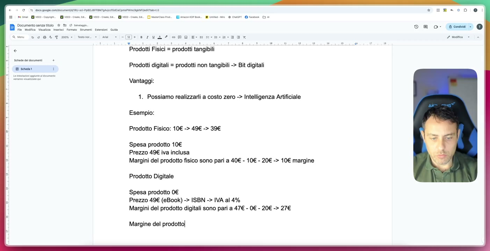
OCR: oca 0g COMSEUMENLRL-PPNOSIFFOMTAANCEICECE COMPRI GO viev-cm to. EI veto: cme ta GI vien: come ta DI Documento senza titolo dt 10 0 segni Que 5 e 6A 2004 >| fesonor - | Aid > -(a]+ A FUA ZOOM Prodotti Fisici = prodotti tangibili Prodotti digitali = prodotti non tangibili -> Bit digitali Vantaggi: 1. Possiamo realizzarli a costo zero -> Intelligenza Artificiale Esempio: Prodotto Fisico: 10€ -> 49€ -> 39€ Spesa prodotto 10€ Prezzo 49€ iva inclusa Margini del prodotto fisico sono pari a 40€ - 10€ - 20€ -> 10€ margine Prodotto Digitale Spesa prodotto 0€ Prezzo 49€ (eBook) -> ISBN -> IVA al 4% Margini del prodotto digitali sono pari a 47€ - 0€ - 20€ -> 27€ Margine del prodotto|
E già questo semplice esempio ragazzi dovrebbe farvi capire il grosso vantaggio di vendere prodotti digitali. Ora parleremo anche di altri vantaggi, ma il grosso vantaggio di vendere prodotti digitali oggi con l'intelligenza artificiale sta appunto nel fatto che possiamo realizzarli a costo zero, abbiamo delle agevolazioni a livello IVA, se vendiamo prodotti tipo ebook con ISBN e poi i margini del prodotto sono praticamente triplicati, almeno in questo esempio, ma nella realtà quotidiana possiamo avere margini che sono di molto superiore rispetto al prodotto fisico, i margini sono molto più alti rispetto al prodotto fisico e questo ragazzi è un qualcosa che dovete assolutamente tenere in considerazione soprattutto all'istante in cui avviate il vostro primo business, perché quando create il vostro business dovete creare un'attività imprenditoriale che vi permetta di marginare il prima possibile il più velocemente possibile, perché se marginate poco avrete problematiche di scaling o correte
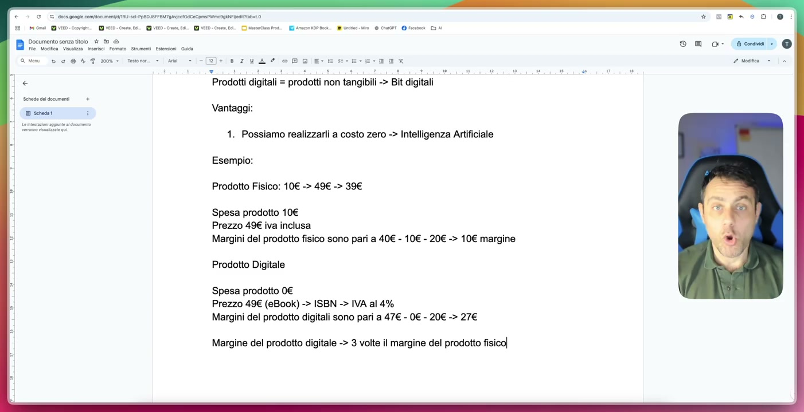
OCR: oca 0g cOMSEIENLRL-PEBOSIFFOMTAANCEIOECE CPI vito. cogne. veto GI vivono. Mrteo-ome ta. DI Documento senza titolo dt © Que de BAT 200- Toson > ari > (+ TUA ODO Et cicaar 2 ricca > ti Prodotti digitali = prodotti non tangibili -> Bit digitali TERM 7 Vantaggi: 1. Possiamo realizzarli a costo zero -> Intelligenza Artificiale Esempio: Prodotto Fisico: 10€ -> 49€ -> 39€ Spesa prodotto 10€ Prezzo 49€ iva inclusa Margini del prodotto fisico sono pari a 40€ - 10€ - 20€ -> 10€ margine Prodotto Digitale Spesa prodotto 0€ Prezzo 49€ (eBook) -> ISBN -> IVA al 4% Margini del prodotto digitali sono pari a 47€ - 0€ - 20€ -> 27€ Margine del prodotto digitale -> 3 volte il margine del prodotto fisico]
il rischio di andare sotto con le campagne pubblicitarie, cosa che non dovete assolutamente fare soprattutto, ripeto, se questo è il vostro primo business. Questo è il motivo per cui io ritengo che ad oggi la vendita di prodotti digitali sia notevolmente superiore in termini di business online rispetto a qualsiasi altro business, forse pari solamente all'affiliate marketing, che tra l'altro non a caso è il mio altro business che conduco con le mie aziende, ma tant'è. Tra l'altro il prodotto digitale lo potete vendere a qualsiasi prezzo che volete, mentre invece quando vendete un prodotto in affiliazione i prezzi sono stabiliti dal merchant, se poi il merchant non vende più quel prodotto voi avete problematiche di derivi e non potete più vendere il prodotto, questo è un altro dei vantaggi del prodotto digitale rispetto ad esempio al business dell'affiliate marketing, ok? Quindi questo è il primo vantaggio. Secondo vantaggio, no stock, cioè che significa? Significa che non avete né stock e no magazzino, mentre nel prodotto fisico voi dovete materialmente avere un magazzino che poi ragazzi lo abbiate voi o che lo
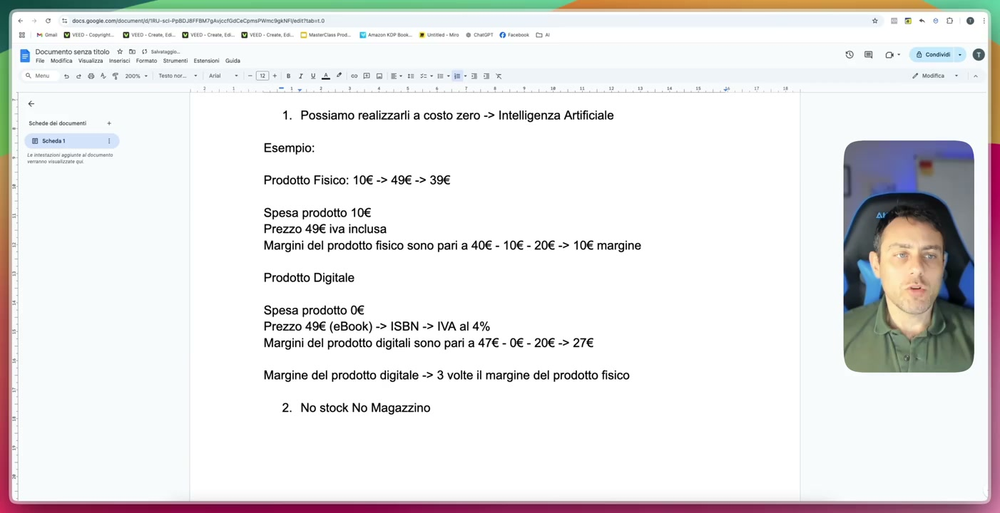
OCR: a è oca 0g COMMENTA -PPROS85FOMTAANCEIOECE COMPA NN Documento senza titolo st tO 6 ssi nen e GA T 07 DI sede GI itv:ce to. Moon ta. DI @l+ er UA OMO Es 1. Possiamo realizzarli a costo zero -> Intelligenza Artificiale Esempio: Prodotto Fisico: 10€ -> 49€ -> 39€ Spesa prodotto 10€ Prezzo 49€ iva inclusa Margini del prodotto fisico sono pari a 40€ - 10€ - 20€ -> 10€ margine Prodotto Digitale Spesa prodotto 0€ Prezzo 49€ (eBook) -> ISBN -> IVA al 4% Margini del prodotto digitali sono pari a 47€ - 0€ - 20€ -> 27€ Margine del prodotto digitale -> 3 volte il margine del prodotto fisico 2. No stock No Magazzino
abbia il fornitore in dropshipping, se fate dropshipping poco importa, ma tant'è, dovete assolutamente avere un magazzino perché ovviamente stiamo parlando di prodotti fisici e quindi li dovete mantenere in una struttura in attesa di spedirli. Con il prodotto digitale questa cosa ovviamente non c'è perché andiamo a vendere dei bit digitali per il web, ok? Non avete problematiche di stock, quante volte per esempio, soprattutto per chi fa dropshipping, iniziate a vendere un prodotto, un classico prodottino cinese su Aliexpress, su Alibaba, su quello che volete voi, poi mentre state scalando la campagna, quindi state andando a vendere più prodotto, quello che succede è che il fornitore interrompe la vendita del prodotto e voi vi ritrovate col culo per aria perché magari stavate scalando le campagne, le campagne andavano bene e restate senza prodotto. Perché? Perché ovviamente vi rifate un fornitore terzo, il fornitore terzo finisce lo stock o magari siete voi direttamente che state vendendo il vostro prodotto, quindi avete un posto prodotto
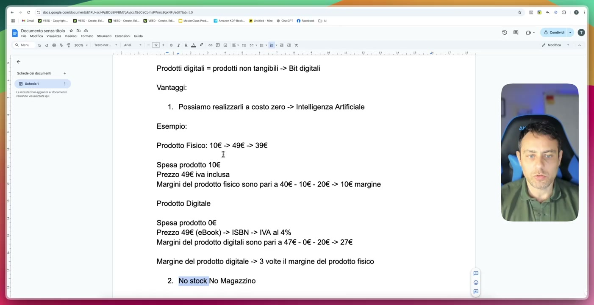
OCR: @ 3 docs osoge compsocumemiit a Documento senza titolo #1 ® © EFFE ANECECEC PMI GO vitv-cme to. Mvrro-cm ta. DI Que de AT 200 è i+ e rUA OMO Ea Prodotti digitali = prodotti non tangibili -> Bit digitali Vantaggi: 1. Possiamo realizzarli a costo zero -> Intelligenza Artificiale Esempio: Prodotto Fisico: 10€ -> 49€ -> 39€ I Spesa prodotto 10€ Prezzo 49€ iva inclusa Margini del prodotto fisico sono pari a 40€ - 10€ - 20€ -> 10€ margine Prodotto Digitale Spesa prodotto 0€ Prezzo 49€ (eBook) -> ISBN -> IVA al 4% Margini del prodotto digitali sono pari a 47€ - 0€ - 20€ -> 27€ Margine del prodotto digitale -> 3 volte il margine del prodotto fisico 2. No stock No Magazzino
solitamente che è superiore rispetto alla classica menu in dropshipping, se state creando il vostro prodotto e poi finite lo stock, quindi dovete fermarvi, dovete fermare le campagne, ovviamente se non fate un'adeguata pianificazione del restock del prodotto, dovete fermarvi, dovete fermare le campagne, dovete fare stock, dovete aspettare che venga prodotto il prodotto, il prodotto fisico e poi lo rimettete in vendita. Questo è un grosso svantaggio rispetto al prodotto digitale perché con il prodotto digitale inizialmente tutto questo non avviene, voi create il prodotto una sola volta e poi lo vendete infinite volte, quindi non avete stock, non avete magazzino, vendete infinite volte. Altro vantaggio sta nel fatto che non avete spedizione e non avete tempi morti di spedizione e non avete costi di spedizione. Ragazzi questo del costo spedizione è un grosso problema perché mentre per voi la spedizione è un qualcosa che
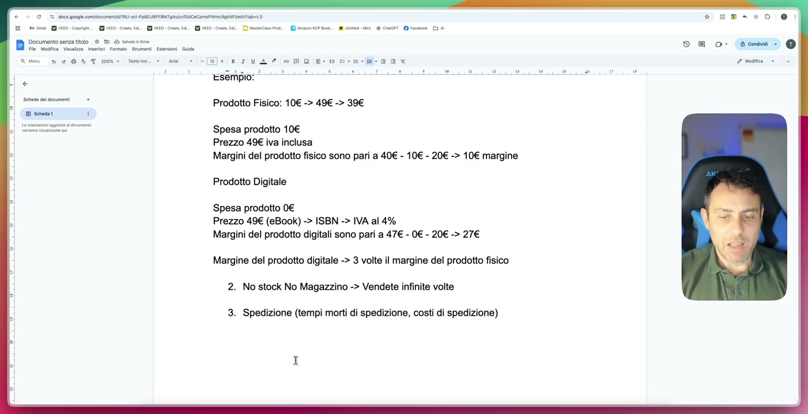
OCR: 662 0g COEN PPOOLEFFOMPOANEICSCE CM PMI O vino-c I O I Documento senza tolo 3 tO sente Que de BAT 200 = | Toson = ari > (+7 Esempio: Prodotto Fisico: 10€ -> 49€ -> 39€ Spesa prodotto 10€ Prezzo 49€ iva inclusa Margini del prodotto fisico sono pari a 40€ - 10€ - 20€ -> 10€ margine Prodotto Digitale Spesa prodotto 0€ Prezzo 49€ (eBook) -> ISBN -> IVA al 4% Margini del prodotto digitali sono pari a 47€ - 0€ - 20€ -> 27€ Margine del prodotto digitale -> 3 volte il margine del prodotto fisico 2. No stock No Magazzino -> Vendete infinite volte 3. Spedizione (tempi morti di spedizione, costi di spedizione)
potreste teoricamente aggiungere al vostro prodotto fisico, quindi nel caso di questo prodotto fisico che viene prezzato a 49 euro potreste dire ok la spedizione che solitamente varia tra i 7 e i 10 euro io la faccio pagare oltre, per il cliente diventa un costo, quindi il cliente se voi aggiungete il costo di spedizione a 10 euro, il cliente si vede il prodotto fisico non a 49 euro ma se lo vede alla fine a 59 euro. Quando arriva al checkout e si vede 49 euro di prodotto più 10 euro di costo spedizione solitamente il cliente lascia perché vede che il prezzo aumenta e questo fa sì che il vostro costo per conversione che noi abbiamo stabilito sulle campagne pubblicità di 20 euro aumenta ok questo significa che se questa aumenta aumenta a 30 euro ragazzi il vostro margine praticamente va a zero. Capirete come questo è un grosso problema ok ma non solo il costo spedizione è un grosso problema perché vi annulla
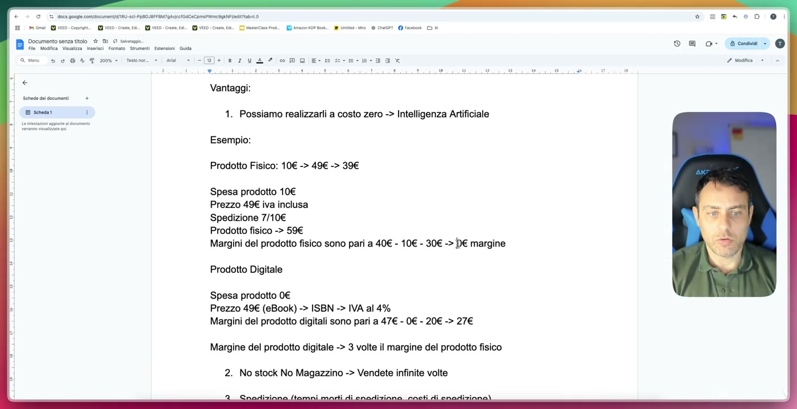
OCR: 6502 0g COMMENTA -PRBDIIFFONTOANCICECE COMPIANTO Documento senza tolo dt tO 0 sem @ en e 6A To i+ e FUA MEI Vantaggi: 1. Possiamo realizzarli a costo zero -> Intelligenza Artificiale Esempio: Prodotto Fisico: 10€ -> 49€ -> 39€ Spesa prodotto 10€ Prezzo 49€ iva inclusa Spedizione 7/10€ Prodotto fisico -> 59€ Margini del prodotto fisico sono pari a 40€ - 10€ - 30€ -> DE margine Prodotto Digitale Spesa prodotto 0€ Prezzo 49€ (eBook) -> ISBN -> IVA al 4% Margini del prodotto digitali sono pari a 47€ - 0€ - 20€ -> 27€ Margine del prodotto digitale -> 3 volte il margine del prodotto fisico 2. No stock No Magazzino -> Vendete infinite volte
indirettamente i margini del business ma è un grosso problema a causa dei tempi morti. Tempi morti di spedizione soprattutto nel drop shipping quando voi acquistate il prodotto dalla Cina e lo rivendete in Italia sono 20-25 giorni di spedizione ragazzi questo è un grosso problema perché le persone oggi non aspettano 20-25 giorni ma semplicemente vi annullano l'ordine vi chiedono il rimborso e poi acquistano lo stesso prodotto su Amazon. Voi direte ma io me la gioco sul rimborso gli do metà rimborso eccetera eccetera ragazzi le cose non stanno in questo modo perché i processori di pagamento solitamente noi utilizziamo i processori di pagamento Stripe o ad esempio ragazzi utilizzate Wordpress Vpayment che è un altro sistema di pagamento o Paypal tra l'altro Vpayment ha incluso al suo interno se utilizzate Wordpress Klarna che è un sistema di pagamento per vendere in tre rate quindi per realizzare il tutto anche Paypal ragazzi devo dire che ha il Paypal tre rate ma Klarna è un sistema di pagamento innovativo che permette di
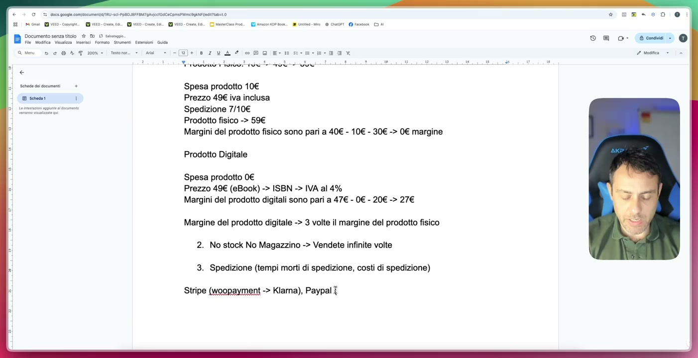
OCR: sca og cOn RL PPOOLEFFOMPOANESICSCE CPP O Documento senza tolo st tO 0 sete Que de GA To Fi DI screda È GI viev-cnme ta Cut cervi ON Ea Spesa prodotto 10€ Prezzo 49€ iva inclusa Spedizione 7/10€ Prodotto fisico -> 59€ Margini del prodotto fisico sono pari a 40€ - 10€ - 30€ -> 0€ margine Prodotto Digitale Spesa prodotto 0€ Prezzo 49€ (eBook) -> ISBN -> IVA al 4% Margini del prodotto digitali sono pari a 47€ - 0€ - 20€ -> 27€ Margine del prodotto digitale -> 3 volte il margine del prodotto fisico 2. No stock No Magazzino -> Vendete infinite volte 3. Spedizione (tempi morti di spedizione, costi di spedizione) Stripe (woopayment -> Kiara), Paypal {
direzionare appunto su carta mentre Paypal magari non ce l'hanno tutti non sono disposti a fare il Paypal tre rate giusto per darvi un'ulteriore nozione sui sistemi di pagamento ma come vi dicevo nell'istante in cui voi iniziate a rompere le scatole al cliente che vuole rimborso non gli date il rimborso per qualsiasi motivo il cliente vi fa una contestazione su Stripe su Paypal e dopo un tot di contestazioni Paypal e Stripe vi bannano l'account e vi azzerano il business e voi ovviamente non volete un business bloccato dall'oggi al domani motivo per cui dovete evitare questi tempi morti di spedizione questi costi di spedizione e qual è il modo migliore ovviamente ragazzi vendere prodotti digitali perché prodotti digitali non hanno tempi di spedizione non hanno costi di spedizione questo ragazzi è un grosso vantaggio il fatto che non avete tempi di spedizione soprattutto nella in termini di scalabilità
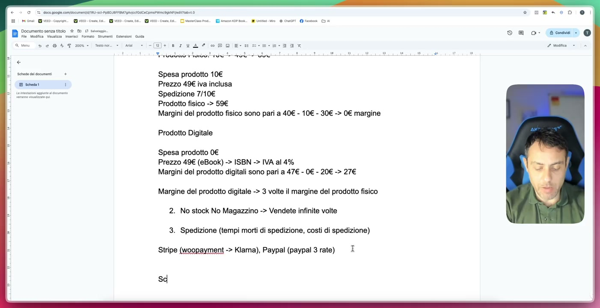
OCR: 020 COMMENT PPODIIFFOMPOANEICOCE COMPIANTO um-
Se io voglio scalare il mio prodotto digitale in tutto il mondo, posso farlo tranquillamente, perché mi basta solamente accendere campagne su un'altra parte del mondo e io vendo il prodotto digitale. Provate a fare la stessa cosa, ad esempio, su un prodotto che vende in dropshipping, quando il fornitore dice espressamente che in Europa non spedisce. È un grosso problema, ragazzi, ed è un grosso problema che i prodotti digitali tendenzialmente non hanno. Detto questo, in realtà ci sono tanti altri vantaggi, ma non mi dilungo più di tanto. Questa lezione serve a farvi capire cosa sono i prodotti digitali, le differenze e i vantaggi con i prodotti fisici e vi faccio vedere anche alcuni esempi di prodotti digitali che potete vendere. Andiamo alla tipologia di prodotti digitali, che cosa tendenzialmente tindalo. Dici che cosa sono realmente i prodotti digitali e che cosa puoi vendere. Ecco una lista di prodotti digitali che potete vendere tranquillamente. Ebook, corsi, ad esempio
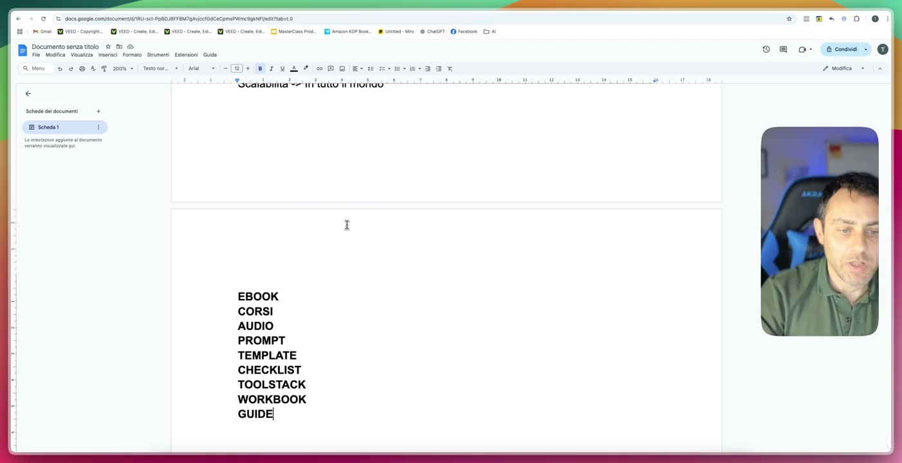
OCR: € > GE Gocaqooie conica 4-PPODIOFFOUTIAIGACAC MEIN HE) bi omni DVD csgit. QD itD- Cin E ED: VDC Ei. CI aa n ana or tg CPT (ict 5 Documento senza titolo © © Que 5 e GA 2004 >| Tesoro < | Ari © (A VA E ovarduila’ invi irtiIvITUO EBOOK CORSI AUDIO PROMPT TEMPLATE CHECKLIST TOOLSTACK WORKBOOK GUIDE]
io questo corso l'avrei potuto tranquillamente prezzare a 300 euro e metterlo al mercato e fare una svagonata di soldi. Siccome il sottoscritto è troppo buono, ho deciso di rilasciarlo gratuitamente. Audio, pack di audio, prompt per i app che sono particolarmente golosi, diciamo, particolarmente in trend in questo periodo. Template, che possono essere template di SMM, Social Media Manager, quindi per esempio tutte le grafiche per i social media, ad esempio template di Temi Wordpress, template di Temi Shopify, template di Funnel, template di Funnel Sistema.Io, non vi preoccupate se non capite o non sapete cosa sono questi strumenti, poi magari discuteremo con qualcuno nel corso di questo grosso corso sui prodotti digitali eccetera eccetera. Checklist, tutto quello che sono pianificatori, checklist vanno
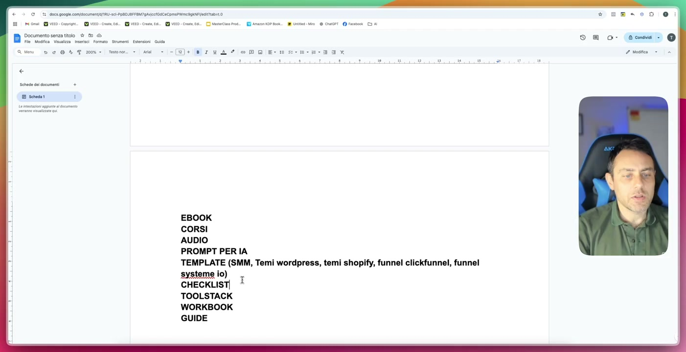
OCR: € > GO 15 doca quo misccumentaRÙ4-PPODIOFFOUTNICIGACCEmaP EA a HE) bons EI VIE Coprgtt. vieD-come ta. VED Cnn a. O VED fi. CI sai po muco DPL neve © PT Gre Documento senza titolo # © Que de BAT 200- tesono + LAO È DI scredai i EBOOK CORSI AUDIO PROMPT PER IA TEMPLATE (SMM, Temi wordpress, temi shopify, funnel clickfunnel, funnel systeme io) CHECKLIST] I TOOLSTACK WORKBOOK GUIDE
a ruba soprattutto se accoppiati in bundle con ebook o videocorsi. Toolstack, workbook e guide che poi alla fine sono una sorta di ebook che hanno più una verticalizzazione su un qualcosa da realizzarsi di pratico. Tutti questi sono prodotti digitali e sono prodotti digitali che potete vendere tranquillamente. Tra i prodotti digitali invece un po' più complessi ci sono i SaaS, cioè i software as a service, ad esempio piattaforme come ClickFunnel, come Sistema.Io, come Shopify, come Kajabi, sono tutti i software as a service. App, tutte le applicazioni che si possono scaricare su Android, che si possono scaricare su Apple Store, sono tutte app che potete realizzare. Questi sono prodotti digitali complessi. Noi non parleremo di questi, parleremo di questa tipologia di prodotti digitali perché ragazzi, perché sono prodotti digitali semplici che potete realizzare in poco tempo con l'intelligenza
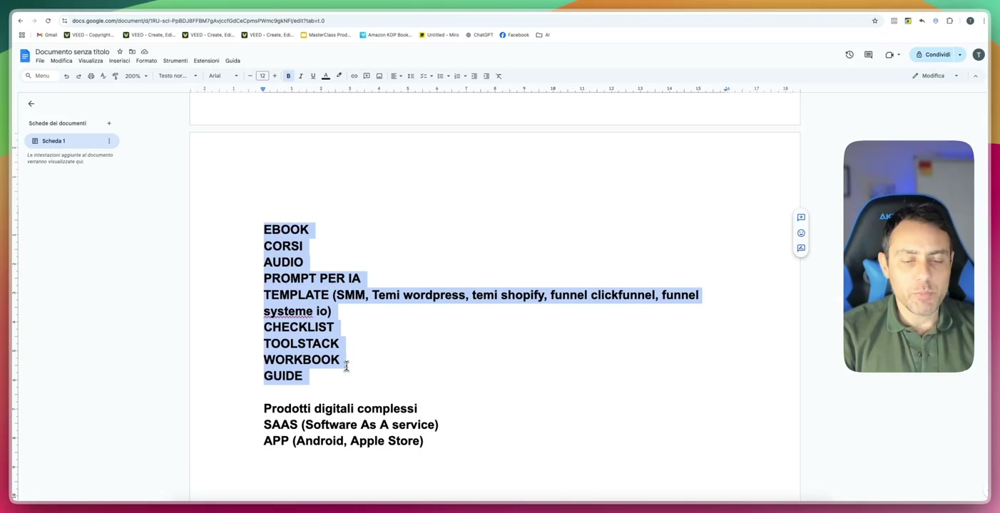
OCR: Documento senza titolo ®© Que e AT - «+ ra ziono ea Fi DI sorndai EBOOK CORSI AUDIO PROMPT PER IA TEMPLATE (SMM, Temi wordpress, temi shopify, funnel clickfunnel, funnel systeme io) CHECKLIST TOOLSTACK WORKBOOK I GUIDE Prodotti digitali complessi SAAS (Software As A service) APP (Android, Apple Store)
artificiale e che potete rivendere in poco tempo. Esistono per la verità anche altri modi per realizzare i prodotti digitali ma non ne parleremo in questo videocorso, parleremo la nostra attenzione si focalizzerà tendenzialmente su come realizzare i prodotti digitali sfruttando l'intelligenza artificiale. Perché? Perché potete realizzare qualcosa di innovativo, potete realizzare qualcosa che non esiste al mercato, metterlo al mercato e non avere concorrenza. Questo è il grosso vantaggio della mia strategia di vendita di prodotti digitali. Allora partiamo dagli ebook, vi mostro se ci riesco. Questo è un esempio di ebook,
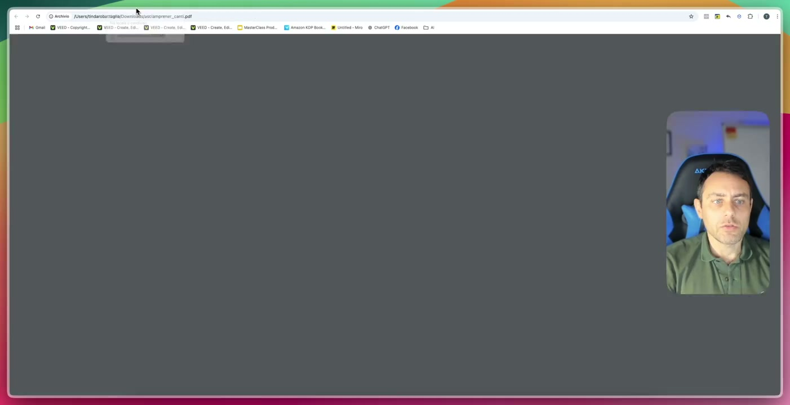
vedete? Classico pdf, ne ho analizzato, ne ho cercato su google. Questo è un classico ebook e le persone vanno pazze per gli ebook, tralasciando il fatto che ad esempio il mercato kindle è in fermento ma quindi la stima di vendita di ebook sale nel corso degli anni, ho fatto fare a CioGpt una stima del trend di vendita di ebook nel mercato globale, come
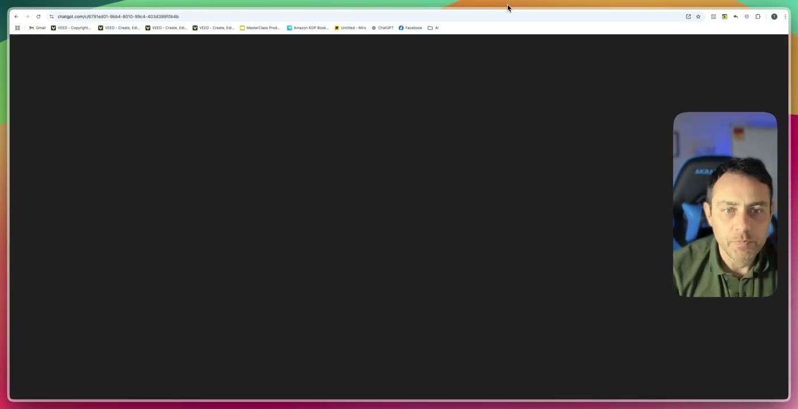
vedete passiamo dal 2023 con meno di 20 miliardi di dollari di vendita di ebook al 2030 con una stima di oltre 100 miliardi, quindi vedete che c'è un grosso mercato dietro la vendita degli ebook ed è un mercato essenzialmente molto molto florido. Nella nostra strategia però noi non ci
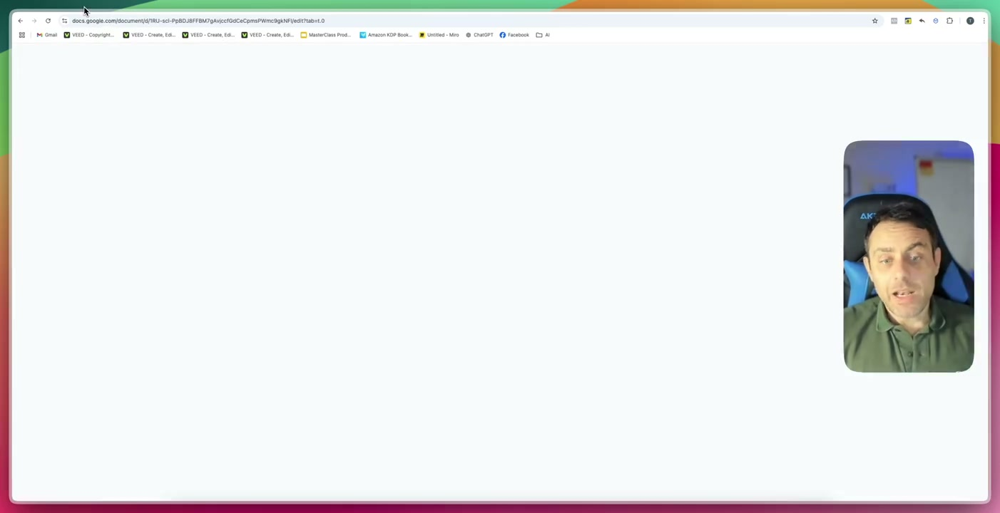
OCR: Got docs gsoge comiSocImetiR a NODIFFONTIANCIOGCAC MPI Hi ni I vir -Copmni E VIGD-Cin Et. ( v0ED- Crt. VED Che. Cna rt ni ot ngi COPY.) rc CI
basiamo su piattaforme terzi come ad esempio amazon, etsy e ebay. Perché non ci basiamo su questo? Tinder perché non vendiamo libri su amazon visto che amazon è il motore di vendita di libri con kindle numero uno al mondo. Ragazzi è semplice perché il vostro scopo da imprenditori è possedere i vostri asset e dare le chiavi del vostro business ad aziende terze come amazon, ebay e etsy che fanno il bello e il cattivo tempo, vi basta solamente cercare amazon, kindle, bannet, my account per capire perché è molto pericoloso affidare le chiavi del vostro business soprattutto se è il vostro primo business ad aziende terze. Sto dicendo che fare business su amazon è profittevole? Sì è profittevole. Sto dicendo che il metodo migliore di partenza? No ragazzi non è il metodo migliore di partenza per questi motivi perché voi state consegnando le chiavi del vostro business ad amazon, etsy e ebay. Io vi mostro questo ma potete tranquillamente
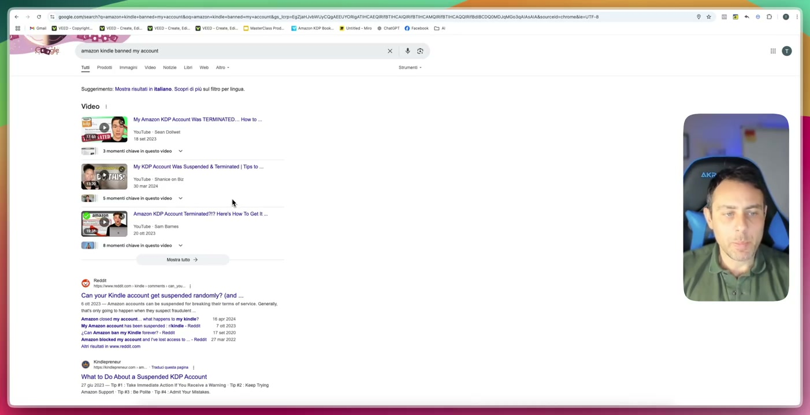
OCR: € > G 5 Gsoglaconientasmazoniide:binnany acconto zamazonindebanasi msc p=EOZRNIN/COGALEUVORGATMEAORISTMCNORAETHCAMONIOTIACAGORABAIBCOGOO MGOIN AN Ascom HE. bons IVECO Ciorght. I VICO. Cn E. CD. Guan (VISO. fi) arca et.) aa Pon Veg © CONT. (its © amazon nale Bannad my cc x|3® Soggerimaio: Mosr uti n talano Scopri di più uo per ingua. Video è soa 194 Amazon KDP Account Win TERMINATED.., How to. fa 144 XKOP Account is Suspended & Teminated | Ts 1 Li @Aemiazon KDP Accouni Terminate? Here Hos To Get oso > Can your Kindle account get suspended randomiy? (and et go agg vv e pc ar 14 Amazon sous Ben paesino - Root: 002023 LC Ames bm my in or Rs staz [rr tc What to Do About a Suspended KP Account 270202 — MI Tate metto An o Recta Warning To 2: K6e Try Amazon Suor TP: e Pot Tp 8: Ara vos i.
cercare la stessa cosa voi per etsy, per ebay eccetera eccetera giusto per rendervi conto con i vostri occhi del fatto che non vi sto mentendo ma che le cose stanno in questo modo. Correte grossi rischi nell'istante in cui consegnate le chiavi di casa a un'azienda terza che l'azienda terza faccia il bello e il cattivo tempo con il vostro business. Molto spesso è successo per esempio che molte persone sono viste l'account chiuso per improbabili violazioni di normative,
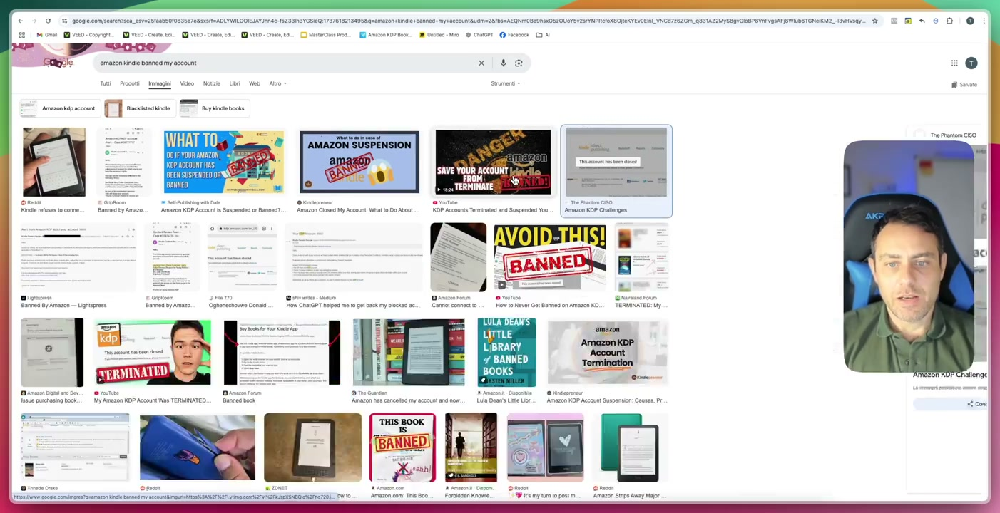
OCR: COS:0UO1S:2UYNARZKXBORAKYEVOENINCH72670m ABMAZZSI:CMPEVnPigeAEMubBTo Ria; DD OD L'BRARY BANNED BOOKS
normative che molto spesso queste aziende lasciano volutamente generiche in modale che possono bloccare gli account senza fornire ulteriori spiegazioni. Vedete qui your KDP account che è l'account per realizzare libri kindle è stato bloccato durante un audit di questo tizio e il grosso problema è che amazon si trattiene i soldi e magari poi vedita però passa molto tempo quindi questo significa che il vostro business è bloccato perché vi ritrovate con loggia al domani, la loggia al domani con praticamente l'account bloccato, ripeto questo sia per amazon che per qualsiasi altra azienda terza, con i soldi bloccati sul vostro account e con una marea di burocrazia che dovete fare per farvi o sbloccare oppure farvi bonificare i soldi dell'account, cosa che ripeto solitamente per mia esperienza amazon dopo un po' di tempo vi dà ma vi blocca tutto perché immaginate di aver fatto campagne per 50 mila euro,
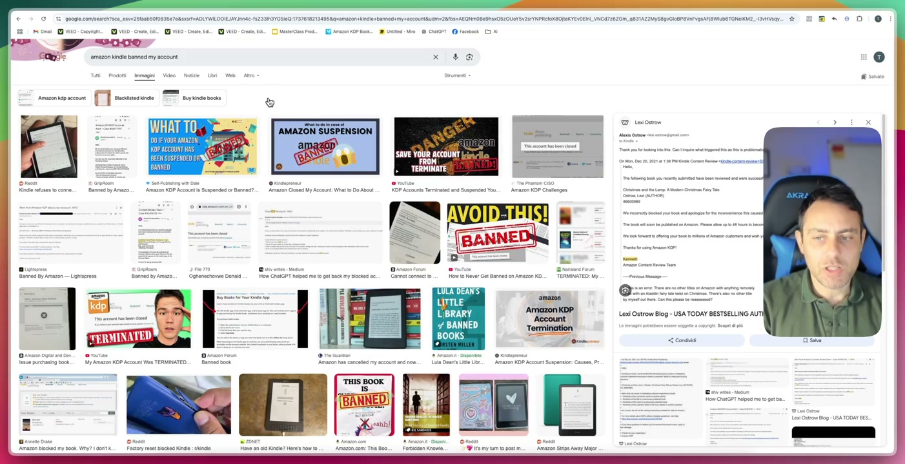
OCR: grape comasca ev: 251350082 TAR -ADLYMLOOILAmc 23M 137818240 n LEONNO 84M: OSZOLE NZ APRO RYENOEVNCA728ZOm_SIAZIMNSBAVGOEPE NAVA MMBETO NAM 4 ET) CO save VOR ACCOUNT ” - i = '» TERMINATE LITTLE “ ee L'BRARY "i Lexi Ostrow Blog - USA TODAY BESTSELLING AUTI = i ocio my Bk i | ot _ Fac reati na inse iv 0 rt e 9 ta mp to pt m.__maon Spa Any Mr Quod O
aver realizzato 100 mila euro di fatturato e quando si arriva al bonifico amazon vi blocca tutto quanto e vi dice che c'è stato un problema nel vostro account dovuto alle polisi e vi ritrovate con 100 mila euro bloccati, ragazzi non è una bellissima situazione quindi motivo per cui quando io parlo di vendere prodotti digitali parlo di possedere i propri asset e quindi di realizzare un e-commerce di prodotti digitali, ok? Quindi questo è quello che facciamo solitamente quando decidiamo di vendere prodotti digitali quindi rifarci a e-commerce, ok? Un e-commerce proprio è un qualcosa che nessuno ci può bloccare, è un qualcosa che nessuno ci può bannare, è un qualcosa che nessuno ci può impedire di continuare a portare avanti, quindi abbiamo parlato di e-book, questo ad esempio è un altro e-book, winning product, no questo è un
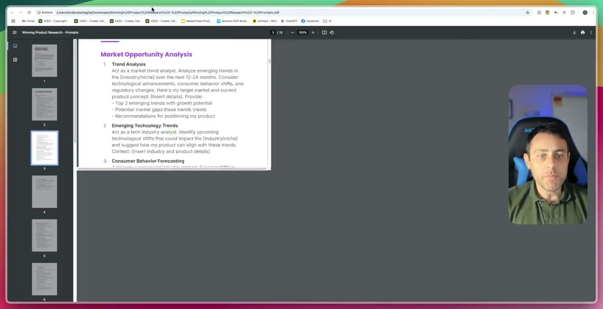
OCR: Opporti Trend Analysis 2 market trend analyst, Analyze emerging tre Emerging Technology Trends Consumer Behavior Forecasting
questo è un workbook, ok? Questo è un workbook con un insieme di cose da fare, vedete? Product validation and testing, questo è una checklist, ok? Realizzata con l'intelligenza artificiale,
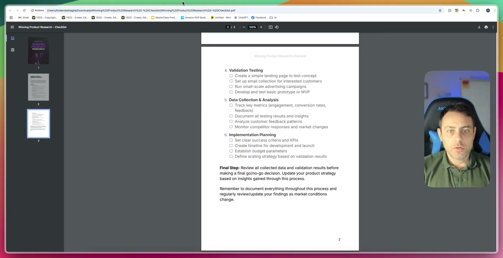
OCR: 4. Validation Testing ate inding pas up emallc for inte Run small-scale advertising campai; Develop and test basic prototype Data Collection & Analysis metrica (engagement cument all testing results and insi Analyze customer feedback p Implementation Planning. ine for development and lish budget parameters aling strategy based on validation results Final Step: Review all collected data and validation results before making a final go/no-go decision. Update your product strategy based on insights gained through his process. Remember to document everything throughout this process and regutarly reviewupdate your findings as market conditions change.
questa è una checklist, customer research, validation testing, che possiamo abbinare a un prodotto digitale di tipo e-book per esempio o un videocorso, questo è un mostro qui, questo per
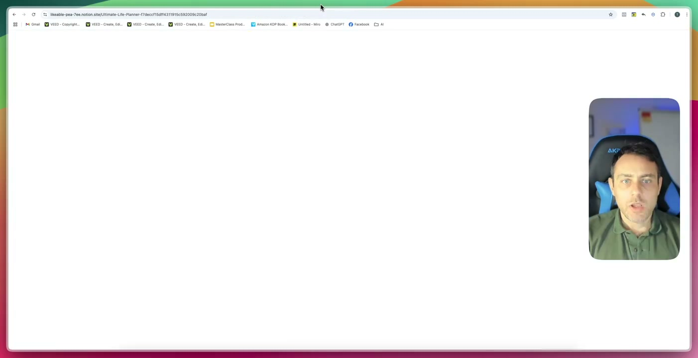
OCR: € > GO 35 ietiepen7eenatonane)itimite Me-annr. css 016S020002008 HE) bi omai VED Cit. RD SED. E VCO: Cn VED fi te i] mimo) asi nego @ OT to DI
esempio è un template ultimate life planner che vengono realizzati solitamente con un sistema che si chiama notion e vi permette di pianificare quella che è la vostra giornata, vedete? Self care, clicchiamo qui e abbiamo a disposizione tutto un insieme di cose da fare, household, solitamente ragazzi questi sono in inglese perché il mercato cui si riferiscono, il più grosso mercato cui si riferiscono ovviamente quello delle big five, mercato di lingua inglese, solitamente ragazzi quando si parla di big five, mercato di lingua inglese, ci si riferisce a Stati Uniti, Canada, UK, Regno Unito, Australia e Nuova Zelanda, ok? Quindi quando sentirete parlare Nuova Zelanda, quando sentirete parlare del mercato big five, tendenzialmente stiamo parlando di questi grossi mercati in cui la lingua inglese spopola, ok? Questo come vi sto dicendo è un template, ultimate life planner, tra l'altro mostra anche l'orario preciso, giovedì, siamo giovedì 22 gennaio 8 e
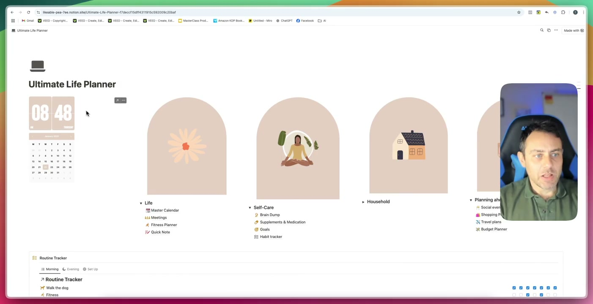
OCR: GO veto cogmon EI VED cnen ta. vito:cnme to. EI verona. Cu Ultimate Life Planner + Lite SUE Master Calendar iii Moeinge 4 Fitness Planner 37 Quick Note Routine Trcker = uomo € nno © setto 7 Routine Tracker PE Watt dog 4 Fires raro OP Bo Una Cont. fc Self-Care 8 Brain Dump 4 Supplement & Mediation @ cos Hinbit tnchae DA
48, data di registrazione di questo video, e abbiamo tutto un insieme di cose che possiamo fare, ad esempio la to do list, per persona, per tutto, vedete? Abbiamo tutto un insieme di pro memoria, possiamo cliccare qui e andare a modificare in tempo reale quello che è il nostro template, ragazzi davvero tanta roba che possiamo o realizzare noi stessi, se sapete utilizzare Notion potete farlo questo abbastanza agevolmente, se non lo sapete fare ragazzi potete o acquistare prodotti digitali che hanno licenza di riutilizzo, sono i cosiddetti PLR, acronimo di Public License Resellable, ragazzi una cosa del genere, ok? Cercate PLR su google e avrete un insieme di prodotti digitali che potete tranquillamente acquistare e per i quali soprattutto avete i diritti di rivendita, questo ad esempio è un prodotto PLR che possiamo rivendere in qualsiasi momento, questo ad esempio è un mock-up per chi vende videocorsi, ok? Quindi possiamo vendere grafiche di questo
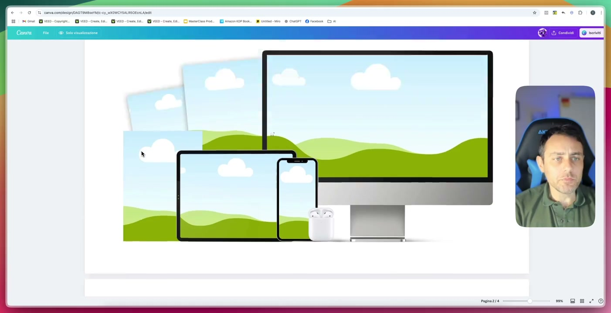
tipo, grafiche che sono realizzate su Canva praticamente in pochi minuti e che possiamo rivendere in qualsiasi momento, vedete? Questo è tutto un insieme di grafiche che ci permettono poi di realizzare dei mock-up per la vendita di ebook, per la vendita di checklist, per la vendita di videocorsi che poi inseriamo o nei nostri profili social o nelle nostre pagine social o ad esempio all'interno della nostra pagina di vendita, ok ragazzi? Quindi questi sono i prodotti digitali, mi pare di aver detto tutto, sì ovviamente quello che faremo noi sarà realizzare prodotti di questo tipo al cento per cento con l'intelligenza artificiale e seguire una strategia che è diversa rispetto alla classica strategia che vi propongono su youtube o che vi propongono nei corsi a pagamento che è una strategia che ha lo scopo di aumentare il più possibile lo scontrino medio per singola transazione che l'utente diciamo effettua nell'istante in cui acquista un prodotto digitale da noi.